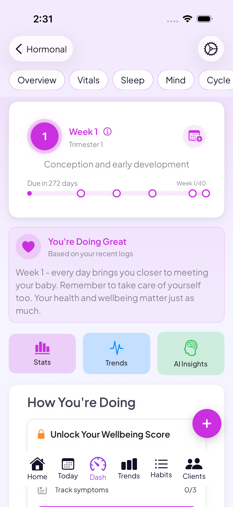

A postpartum tracker for the fourth trimester
Your body is recovering from one of the steepest hormone drops it will ever go through, while you're also caring for a newborn. Go Go Gaia tracks bleeding, healing, pain, mood, and sleep through the fourth trimester in the same app that tracked your pregnancy, then moves you back into cycle tracking when your period returns.
Download Go Go GaiaNot on iPhone? Use the web app in any browser.

On a computer?
Scan to download on your phone.

Built for the fourth trimester
Bleeding & healing tracking
Log bleeding changes, pain, and pelvic-floor notes as they shift week to week, so you have a real record instead of trying to recall it later.
Daily mood logging
Log how you're feeling every day through the fourth trimester, so you have something concrete to bring to a postpartum visit rather than a memory of a hard stretch.
Sleep & symptom tracking
Track sleep, energy, night sweats, and headaches alongside your recovery, and breastfeeding sessions as your feeding routine settles in.
A smooth move back to cycle tracking
When your period returns, often a little different than before, Go Go Gaia is already set up to track it, no switching apps or starting a new record.
One continuous health record
Your data carries through from pregnancy to postpartum to regular cycles, so your history doesn't reset at delivery.
Doctor-ready data export
Bring an organized, dated record of your recovery to your postpartum visit instead of trying to summarize weeks from memory.
The half most baby apps skip
Most tracking apps after birth are built around the baby, feeds, naps, and diapers. That leaves the person who actually gave birth without anywhere to log what her own body is doing. Go Go Gaia is built around your recovery: bleeding, pain, mood, and sleep, in the same app that tracked your pregnancy, so nothing resets and there's one place to look back on the whole picture. It's meant to sit alongside a dedicated baby tracker rather than replace one.
What you can log
Private by default
Your health data is encrypted and stored securely. Go Go Gaia doesn't run ads or sell your data to third parties, and you can export or delete your data at any time.
Frequently asked questions
Still comparing options? See our postpartum & newborn app comparison, or read our week-by-week postpartum recovery guide.
Track your own recovery, not just the baby's naps
Bleeding, mood, sleep, and pain, together from day one, in the app that tracked your pregnancy.
Download Go Go GaiaNot on iPhone? Use the web app in any browser.
Tracking for other conditions
IVF tracking · PCOS tracking · Endometriosis tracking · Cycle syncing · All conditions